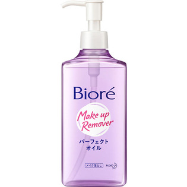

返回列表
产品名称：ビオレ メイク落とし パーフェクトオイル

花王 ビオレ メイク落とし パーフェクトオイル ２３０ＭＬ
メーカー 花王
JANコード 4901301761385
商品の特徴
手や顔がぬれていてもマスカラまですっきり
- 成分・分量
- ミネラルオイル、ラウリン酸PEG-12、イソドデカン、水、パルミチン酸イソプロピル、シクロメチコン、イソステアリン酸ポリグリセリル-2、デシルグルコシド、ポリソルベート85、オレイン酸グリセリル、イソステアリン酸、イソステアリルグリセリル、イソステアリルグリセリルペンタエリスリチル、ミリスチルアルコール、エタノール、クエン酸、リン酸、BHT、香料、トコフェロール
- 用法及び用量
- 適量（ポンプ4押し程度）をメイクとなじませ、あとはよく洗い流します。
※ 肌が非常にぬれている洗髪後等は、軽く水をきって使うことをおすすめします。
※ 低温下ではオイルが濁る場合があります。
その場合は、常温で透明に戻してからお使いください。